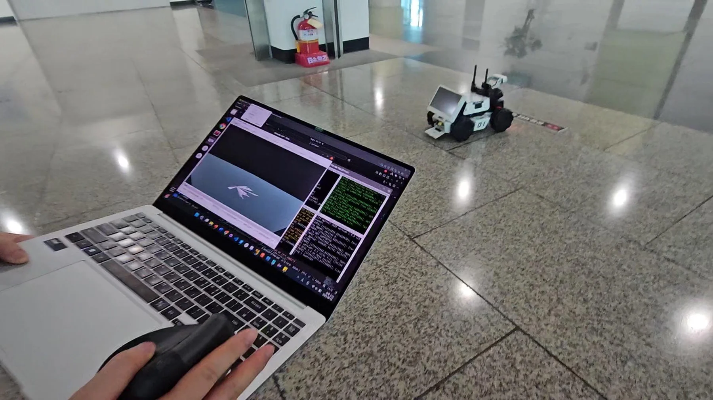
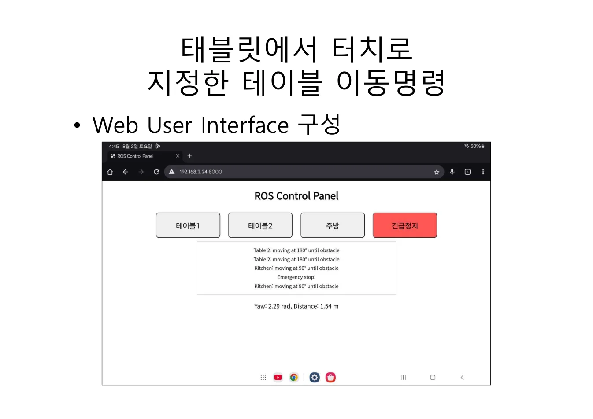
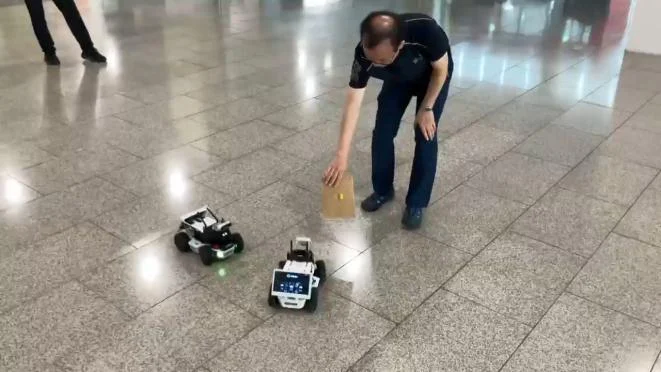
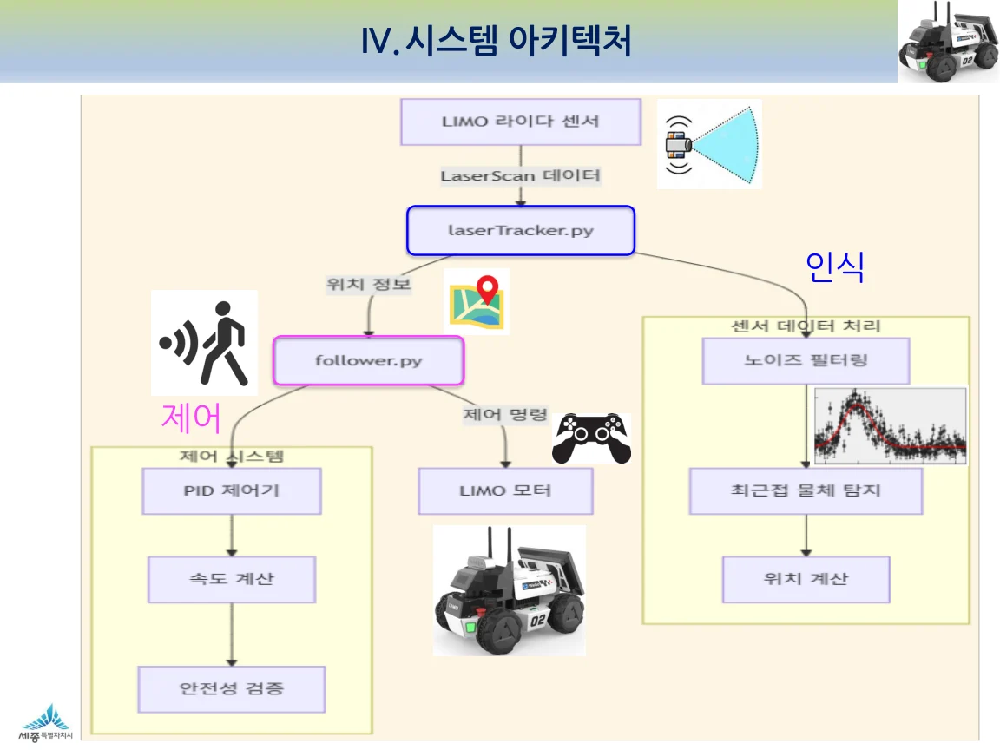
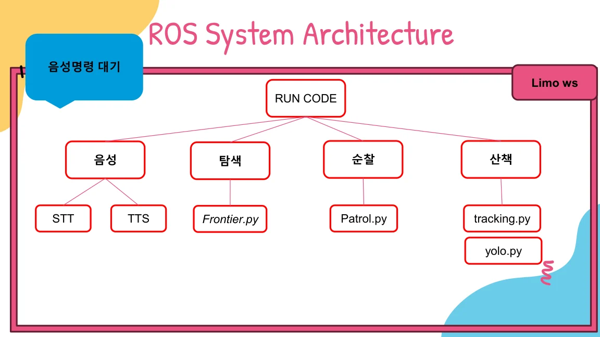
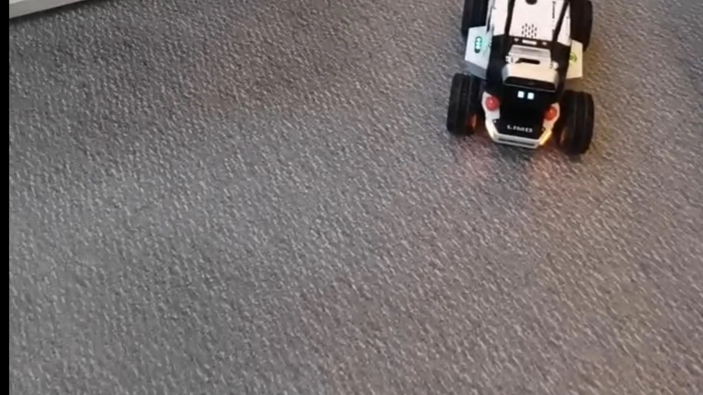
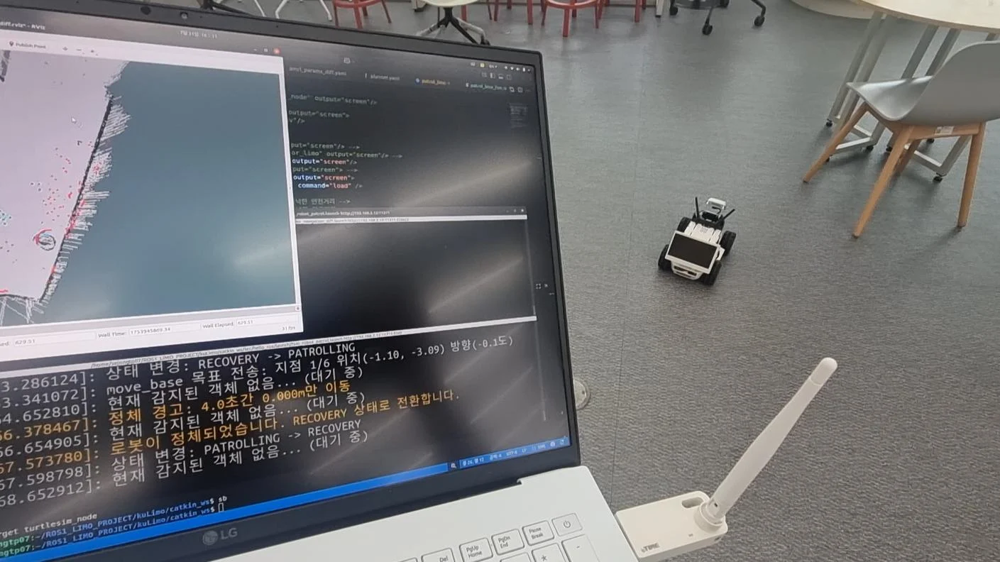
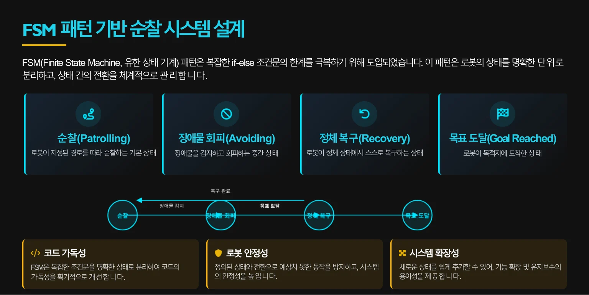
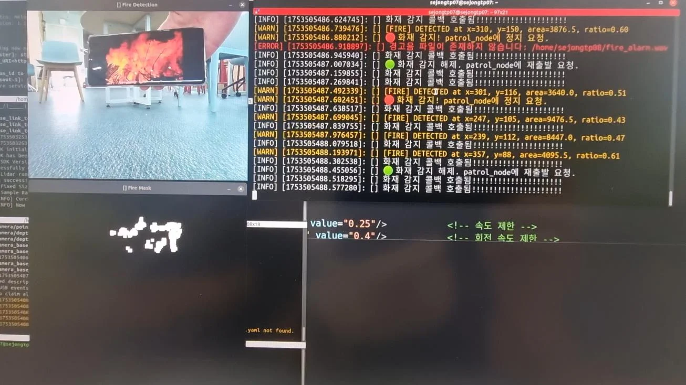
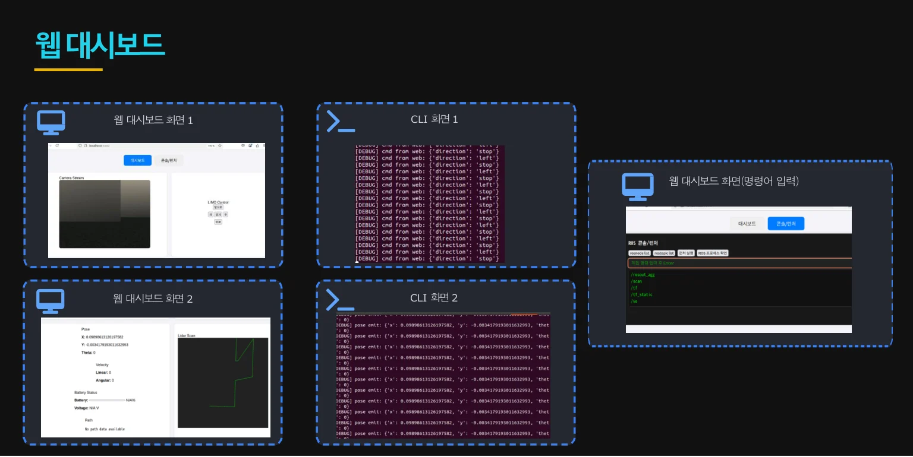

ICT EDUCATION / MARCH—AUGUST 2025
코드가 길을 찾고,
LIMO가 움직이다
ROS의 메시지 한 줄에서 교육장 지도와 네 팀의 서비스까지. 실기체를 움직이며 배운 ICT 자율주행과정의 기록.
명령을 보내는 실습에서
스스로 움직이는 시스템으로
「쉽게 시작하는 스마트시티 자율주행 자동차 다루기」 과정은 개발 환경과 ROS 통신을 배우고, 시뮬레이터에서 지도를 만든 뒤, 실제 LIMO의 센서와 주행을 연결하는 순서로 진행했습니다. 마지막에는 같은 로봇으로 서로 다른 네 가지 서비스를 구현했습니다.

크게 보기 ↗3조 최종 발표자료의 실제 실습 화면. 사진·설계도·시연 캡처를 해당 자료의 출처와 함께 소개합니다.
- 기초와 시뮬레이션
- Python · ROS1/ROS2 · Gazebo · Nav2
- 실기체 적용
- LIMO · LiDAR · 카메라 · 지도와 순찰
- 네 팀의 결과
- 운반 · 추종 · 반려로봇 · 스마트 관제
03–04 / FOUNDATION
리눅스와 Python에서 ROS 노드까지
개발 환경 · 토픽 · 서비스 · 파라미터
처음부터 로봇을 움직이기보다, 코드를 실행하고 결과를 확인할 수 있는 환경부터 만들었습니다. 3월 15일과 4월 5일에는 VMware의 Ubuntu 환경, 리눅스 명령어, VS Code와 Python을 다뤘습니다. 조건문·반복문·함수에서 리스트·딕셔너리·클래스·모듈로 이어지는 기초가 이후 ROS 노드 작성의 바탕이 되었습니다.
4월 12일부터는 Docker의 ROS1 Noetic 환경과 ROS2 환경을 함께 사용했습니다. turtlesim에 Twist 메시지를 보내고, 발행자와 구독자를 연결하고, launch 파일로 여러 노드를 실행했습니다. 4월 26일의 다섯 노드 연결 과제는 개별 예제를 하나의 통신 구조로 묶어 보는 실습이었습니다.
서비스 서버·클라이언트, 비동기 호출, YAML 파라미터와 사용자 정의 인터페이스까지 확장했습니다. 같은 기능을 ROS1의 catkin과 ROS2의 colcon 환경에서 비교하며 메시지가 어디서 만들어져 어느 노드로 전달되는지 확인했습니다.
- Python으로 동작 표현
- 노드와 메시지 작성
- 토픽·서비스 연결
- launch로 함께 실행
05–06 / MODEL · MAP · NAVIGATION
로봇의 몸을 만들고, 지도를 읽고, 목적지로 이동하기
URDF·Xacro · Gazebo · Cartographer · Nav2 · TF
5월 24일에는 ku_description 패키지에서 link와 joint, 충돌 영역과 관성 정보를 다루고, URDF를 Xacro로 확장했습니다. RViz2에서 형상과 좌표계를 확인하고 Gazebo의 world에 로봇과 표지판을 배치했습니다. 화면 속 로봇이 어떤 구조와 좌표 관계로 움직이는지 이해하는 단계입니다.
5월 31일에는 Cartographer로 지도를 만들고 map.pgm·map.yaml을 저장했습니다. OccupancyGrid와 LaserScan 메시지를 읽고, publish_map·scan_map 노드를 작성하며 센서 관측과 지도의 관계를 살폈습니다.
6월 7일에는 Nav2에서 초기 위치와 목표점을 지정하고, 이동 경로에 장애물을 놓아 경로가 바뀌는 것을 확인했습니다. patrol.py는 FollowWaypoints 액션을 사용해 목표 위치와 방향을 전달합니다. dynamic_tf·tf_listener·follow_turtlesim 실습은 서로 다른 좌표계 사이에서 위치를 해석하는 연습으로 이어졌습니다.
06–07 / LIMO PRACTICE
시뮬레이터의 코드를 실제 LIMO로 옮기기
주행 모드 · 원격 통신 · 차선 인식 · SLAM · 순찰
6월 14일부터는 실제 LIMO의 하드웨어와 주행 모드를 확인하고, 조종기·키보드·SSH로 기체를 움직였습니다. LiDAR로 교육장 지도를 만들고 저장한 뒤, 지도 위의 목적지를 찾아가는 실습으로 연결했습니다.
6월 21일에는 노트북과 로봇을 ROS1 네트워크로 연결했습니다. 노트북에서 토픽을 확인하고 원을 그리는 제어 노드를 실행한 뒤, limo_application의 stop·control·line_detect 노드를 실제 트랙에서 조정했습니다. 카메라가 선을 찾는 것과 차체가 안정적으로 선을 따라가는 것은 별도로 확인해야 하는 문제였습니다.
6월 28일에는 LIMO Gazebo 모델의 namespace와 launch를 수정하고 월드의 바닥 이미지를 바꾸었습니다. 7월 5일에는 gmapping과 limo_navigation, patrol_limo를 시뮬레이션과 실기체에 적용했습니다. 이 ROS1 순찰 코드는 move_base에 목표를 보내고 도착 콜백을 받으면 다음 지점으로 넘어가는 구조입니다.
3조 발표자료 36쪽의 탐색 모드 시연 화면. 노트북의 시각화 화면과 실제 LIMO를 함께 볼 수 있습니다.
kuLimo 저장소에 포함된 트랙 이미지. Gazebo 환경과 차선 인식 실습에 사용하는 시각 자료입니다.
ROS2에서 배운 흐름
Gazebo·Cartographer·Nav2로 지도 생성과 waypoint 이동을 학습했습니다.
LIMO 실기체에 연결한 흐름
ROS1 기반 gmapping·move_base와 센서·제어 노드를 연결했습니다. 수업 기록의 혼용된 명칭은 실제 코드에 맞춰 구분했습니다.
07.12–08.09 / TEAM PROJECT
실행되는 예제를 각 팀의 서비스로 바꾸기
주제 선정 → 구현 → 현장 조정 → 최종 발표
7월부터는 네 팀이 주제를 정하고 매주 구현 상태와 막힌 문제를 공유했습니다. 공동 슬라이드에는 통신 연결, 카메라의 색상·깊이 데이터 문제, 지도 재작성, 장애물 감지 민감도 조정 등 실기체에서 마주친 작업이 기록되어 있습니다.
운영계획서는 8월 2일 최종 테스트까지를 담고 있으며, 1조 발표자료의 날짜와 주간 업무일지는 8월 9일 최종 발표를 확인해 줍니다. 아래 네 사례는 그 과정에서 제출된 발표자료와 진행 기록을 함께 읽어 정리했습니다.
- 7월 12일 주제·환경 정리
- 7월 19·26일 구현과 수정
- 8월 2일 테스트·발표 준비
- 8월 9일 최종 발표
TEAM 01 / TOUCH & GO
터치 한 번으로 테이블을 오가는 운반로봇
터치앤고 · 웹 제어 화면 · 지점 간 운반
1조는 필요할 때 호출해 정해진 장소로 물품을 운반하는 서비스를 제안했습니다. 최종 발표자료는 이현성·구찬형의 「터치앤고」로, 태블릿의 버튼을 눌러 주방에서 1번·2번 테이블로 이동시키고 다시 주방으로 복귀시키는 시나리오를 담고 있습니다.
프로젝트에서 중요한 연결은 웹 화면의 요청을 로봇의 이동 명령으로 전달하는 부분입니다. 7월에는 통신 연결과 코드 리팩터링, 기체 bringup 설정과 브라우저 버튼 구성을 진행했습니다. 최종 자료에는 ROS Control Panel과 시연 배치도, 이동·복귀 순서, 시연 영상 링크가 남아 있습니다.

크게 보기 ↗1조 발표자료 11쪽. 실제 발표에 사용한 웹 제어 화면으로, 버튼을 누르는 사용자 동작을 이동 요청에 연결합니다.
구현의 중심
테이블 선택 → 이동 요청 → 도착·수령 → 주방 복귀라는 서비스 순서를 만들었습니다.
확장 아이디어
드론 배송 협업과 라스트마일 운반은 발표에서 제안한 활용 방향입니다. 이번 시연의 구현 범위와 구분합니다.
TEAM 02 / FOLLOW ME
거리와 각도 오차로 앞선 대상을 따라가기
박정우 · 차경민 · 장대진 · 이경용 / LiDAR 추종
2조는 사람이 움직일 때 로봇이 일정한 거리를 유지하며 따라오는 Follow Me를 개발했습니다. 초기 기록에는 카메라 색상·깊이 정보를 읽지 못하는 문제가 있었고, 최종 발표는 LiDAR 데이터만으로 가까운 물체를 인식하고 추종하는 시스템으로 정리되어 있습니다.
센서값을 그대로 속도 명령으로 쓰지 않고, 10cm 미만의 초근접값과 갑작스럽게 나타나는 노이즈를 걸러 냈습니다. 추종 대상과의 거리·각도 오차를 계산하고 PID 제어를 통해 차량의 움직임으로 바꾸는 흐름입니다. 발표자료는 직선·곡선 추종과 앞선 대상이 다가올 때 후진하는 동작을 보고합니다.

크게 보기 ↗2조 발표자료 9쪽에 포함된 실제 시험 장면. 공동 진행 기록에도 듀얼 Follow Me 구현·시험이 남아 있습니다.

크게 보기 ↗2조 발표자료 6쪽. LiDAR 입력에서 대상 위치와 속도 명령으로 이어지는 연결을 설명합니다.
배운 문제 해결
비전 입력 문제를 만난 뒤 LiDAR 기반으로 구현 범위를 좁히고, 필터링과 제어 오차를 다뤘습니다.
다음 과제
비전 센서 융합, SLAM 적용, 장애물 회피 강화는 후속 개발 항목입니다. 발표의 시연 결과를 일반 환경의 성능 보장으로 확대하지 않았습니다.
TEAM 03 / COMPANION ROBOT
탐색하고, 대화하고, 순찰하는 ‘우리집 뭉이’
손건희 · 이승원 · 최근호 / 기능을 모드로 연결하기
3조는 LIMO를 반려로봇으로 해석했습니다. 새로운 장소를 탐색하는 모드, 음성으로 상호작용하는 모드, 집 안을 순찰하는 모드, 함께 걷는 모드를 하나의 시스템으로 구성했습니다.
발표의 노드 구성도는 STT·TTS와 Frontier.py·Patrol.py·tracking.py·yolo.py를 나누고 음성 명령에 따라 기능을 연결합니다. 8월 2일 기록에는 waypoint 순찰, 위치 추정과 지도 작성, LiDAR 기반 대상 추적, 음성 기능의 진행 상태가 구체적으로 적혀 있습니다.
여러 기능을 추가할수록 어떤 모드를 실행하고 언제 전환할지 정하는 구조가 중요해집니다. 발표자료에는 탐색·음성·순찰 시연 화면이 있으며, 산책 모드의 최종 시연 화면은 비어 있습니다. 네 모드를 모두 같은 수준의 완성 결과로 설명하지 않고, 구현 기록과 설계를 구분했습니다.

크게 보기 ↗3조 발표자료 30쪽. 각 모드의 역할과 연결 관계를 보여 주는 설계도입니다.

크게 보기 ↗3조 발표자료 37쪽의 영상 대표 화면. 음성 상호작용을 실기체에 연결한 발표 장면입니다.
TEAM 04 / SMART GUARDIAN
멈춘 순찰로봇을 다시 움직이게 만드는 설계
이한솔 · 정용태 · 맹진수 · 최용규 / 순찰·비전·웹 관제
4조 Smart Guardian은 자율순찰, 카메라 기반 상황 감지, 웹 관제를 연결했습니다. ROS1 환경에서 SLAM 지도와 move_base를 사용하고, OpenCV의 HSV 기반 화염 후보 검출과 YOLOv4 객체 인식, CSV 데이터 기록과 FastAPI 웹 화면을 결합했습니다.
가장 자세한 학습 기록은 순찰로봇이 장애물 근처에서 멈추는 문제입니다. 팀은 복잡한 if-else 조건을 순찰·회피·정체 복구·목표 도달 상태로 나누는 FSM 구조로 바꾸고, YAML에서 정체 감지 시간과 이동 거리 등의 값을 조정했습니다. move_base의 정체·타임아웃을 감지한 뒤 복구 동작을 시도하는 방식입니다.
실습 장소가 바뀌자 지도를 다시 만들고 각 노드를 재시험했습니다. 발표의 결론도 장애물 회피와 정체 복구가 목표한 수준에 완전히 도달하지 못했다고 밝힙니다. 이 프로젝트의 가치는 기능 목록뿐 아니라 실패 조건을 관찰하고 구조와 파라미터를 바꾸어 본 과정에 있습니다.

크게 보기 ↗4조 발표자료 13쪽. 지도·로그와 LIMO의 이동을 함께 확인한 시연 화면입니다.

크게 보기 ↗4조 발표자료 8쪽. 조건문이 복잡해지는 문제에 대응해 도입한 FSM 설계입니다.

크게 보기 ↗4조 발표자료 15쪽. 영상의 색상 조건을 이용한 교육용 검출 시연으로, 현장 화재 감지 성능을 검증한 결과는 아닙니다.

크게 보기 ↗4조 발표자료 20쪽의 실제 대시보드·터미널 화면. 감지·이동·관제를 하나의 흐름으로 묶었습니다.
개선한 지점
상태를 분리하고, 정체 판정·복구 파라미터와 경유지를 조정하며 반복 시험했습니다.
남은 과제
동적 장애물 대응, 네트워크 지연, 하드웨어 자원 제약이 남았습니다. ArUco 마커 기능은 향후 발전 과제로 제시되었습니다.
자료와 기록
수업 저장소 kuLimo의 일별 기록·코드, 프로그램 운영계획서, 오리엔테이션 자료, 교육생 공동 슬라이드와 네 팀의 최종 발표 PDF를 대조했습니다. 계획된 교육 내용보다 실제 수업일지와 구현 기록을 우선했습니다.
운영계획서의 종료일은 8월 2일이며, 최종 발표일 8월 9일까지를 이 포스트의 기간으로 표기했습니다. 전체 과정에는 별도 강사의 통계교육도 포함되어 있습니다. 이 글은 당시 바인드소프트 소속 최수길이 진행한 ROS·LIMO 교육과 팀 프로젝트 지도 경험을 중심으로 정리했습니다.
사진과 화면은 교육생 발표자료의 시연·설계 자료입니다. 팀이 제안한 활용 가능성과 향후 개발 항목은 실제 구현 결과와 구분했습니다.